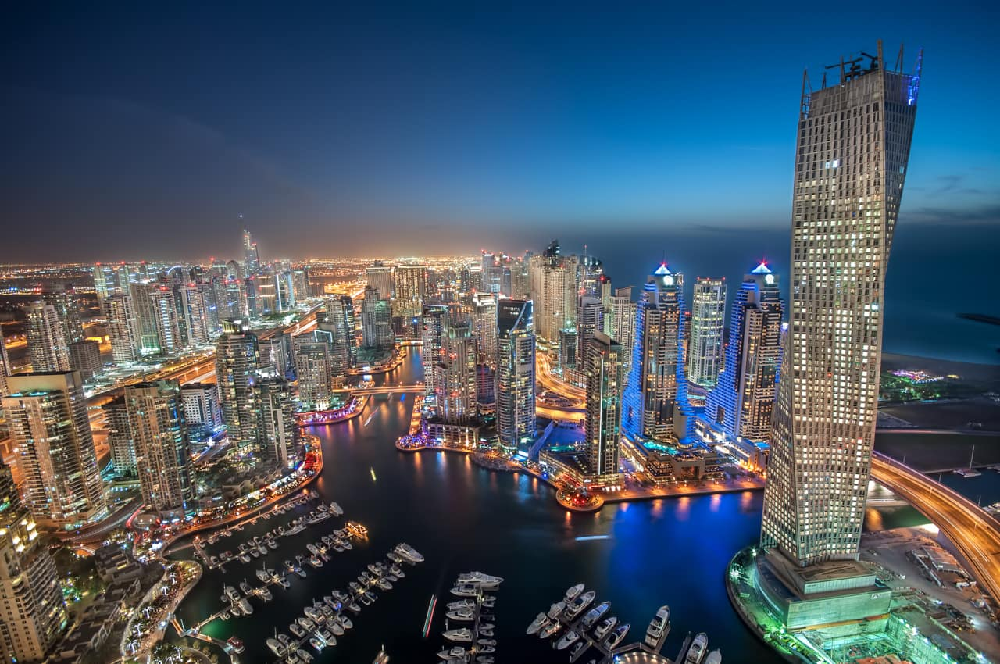
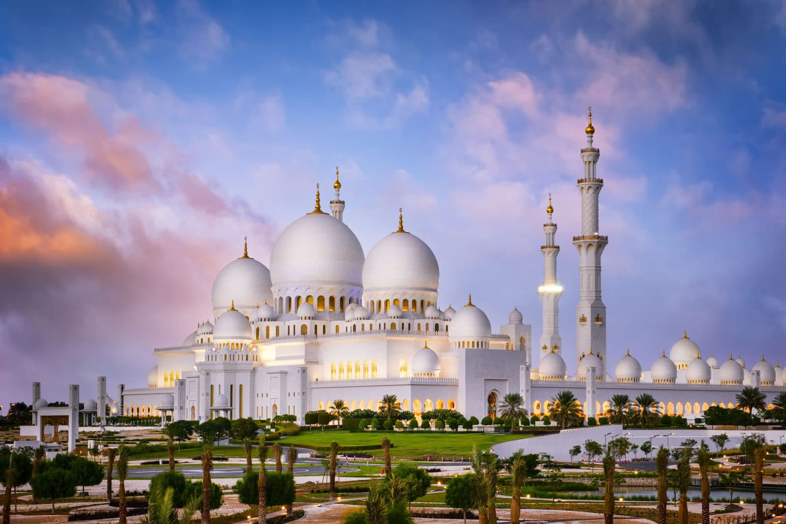
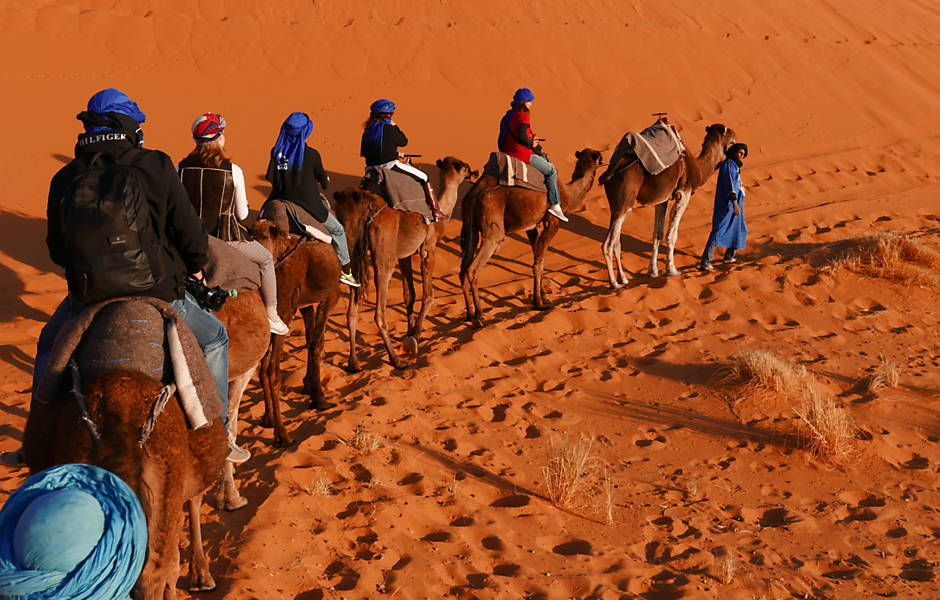
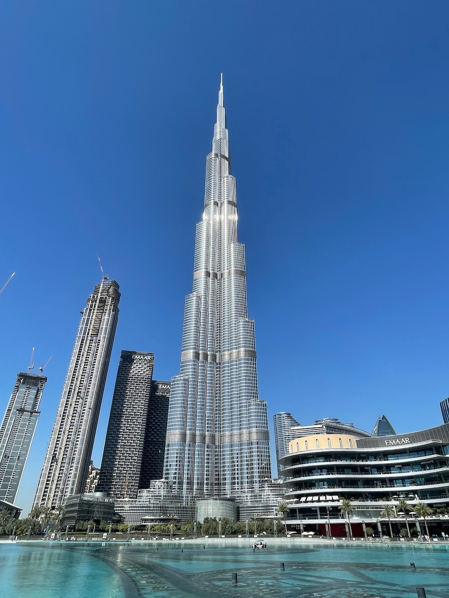

O turismo é, junto da exploração petrolífera, uma das atividades de maior importância na economia dos Emirados Árabes Unidos. Em um período recente, o turismo chegou a responder por mais de 11% do PIB nacional. Os grandes centros urbanos e as suas construções extravagantes, as cidades histórias, os passeios guiados no deserto e as várias ilhas naturais e artificiais banhadas pelas águas do golfo Pérsico estão entre os principais atrativos do país.
A seguir, confira alguns dos destinos turísticos mais procurados nos Emirados Árabes Unidos.
Cidade de Dubai, no emirado de mesmo nome
Cidade de Abu Dhabi, capital dos Emirados Árabes Unidos
Deserto Arábico (Passeios guiados e acampamentos no deserto Arábico são muito procurados por turistas)
Burj Khalifa, o maior arranha-céu do mundo
É um arranha-céu, sendo a maior estrutura e, consequentemente, o maior prédio já construído pelo ser humano no mundo inteiro, com 828 metros de altura e 160 andares. O Burj Khalifa foi desenhado para ser um espaço que incluiria 30.000 lares, 9 hotéis, 3 hectares de parque, pelo menos 19 torres residenciais, o shopping de Dubai e o lago artificial Burj Khalifa, com 30 hectares.
Você vai desfrutar muito dos hotéis e as lojas mais visitadas da cidade que rodeiam o Burj Khalifa. Além de um mundo de opções de entretenimento. Também você pode aproveitar o mais alto mirante do mundo, com 555 metros de altura, podendo subir ao andar 124º fazendo uma incrível vista panorâmica com o telescópio. Aliás, pode fazer compras.